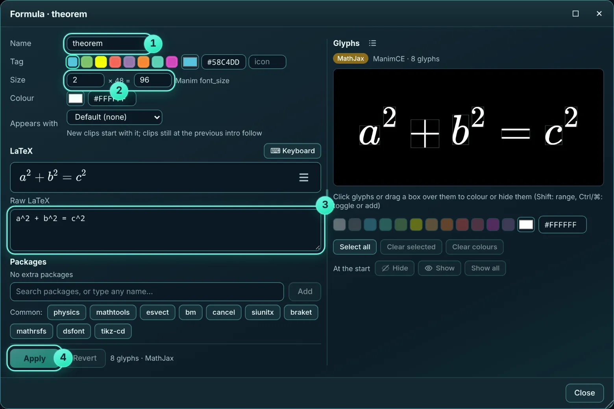
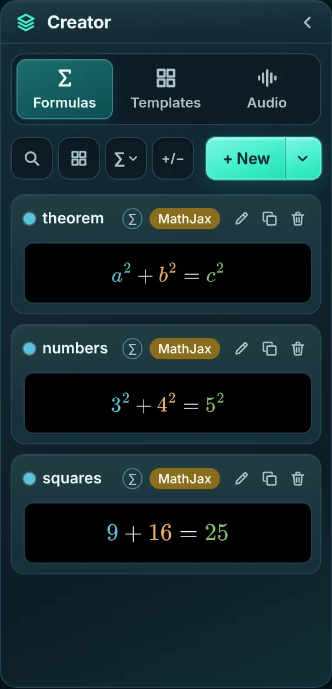
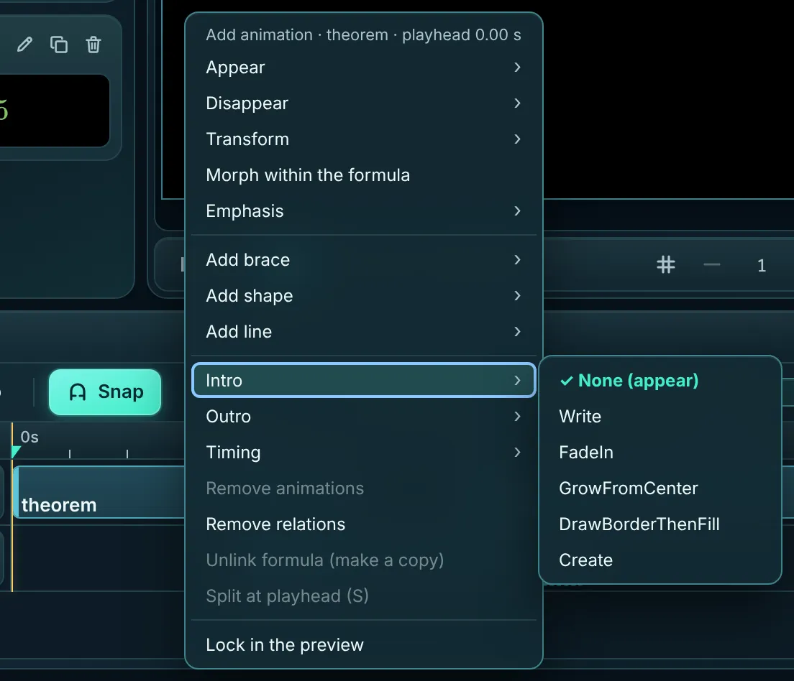
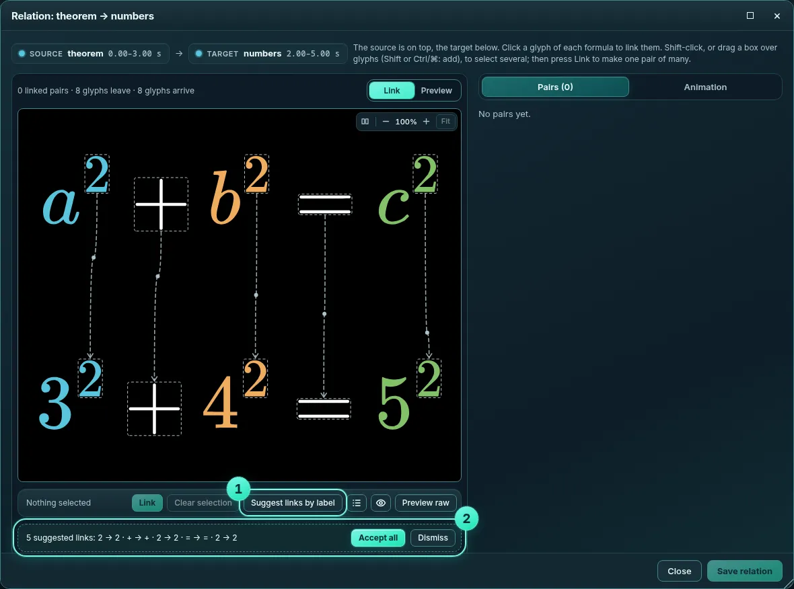
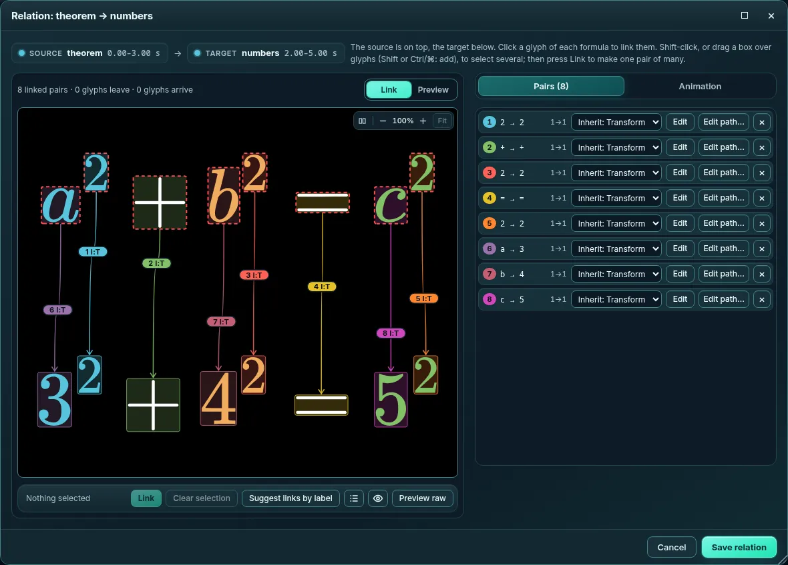
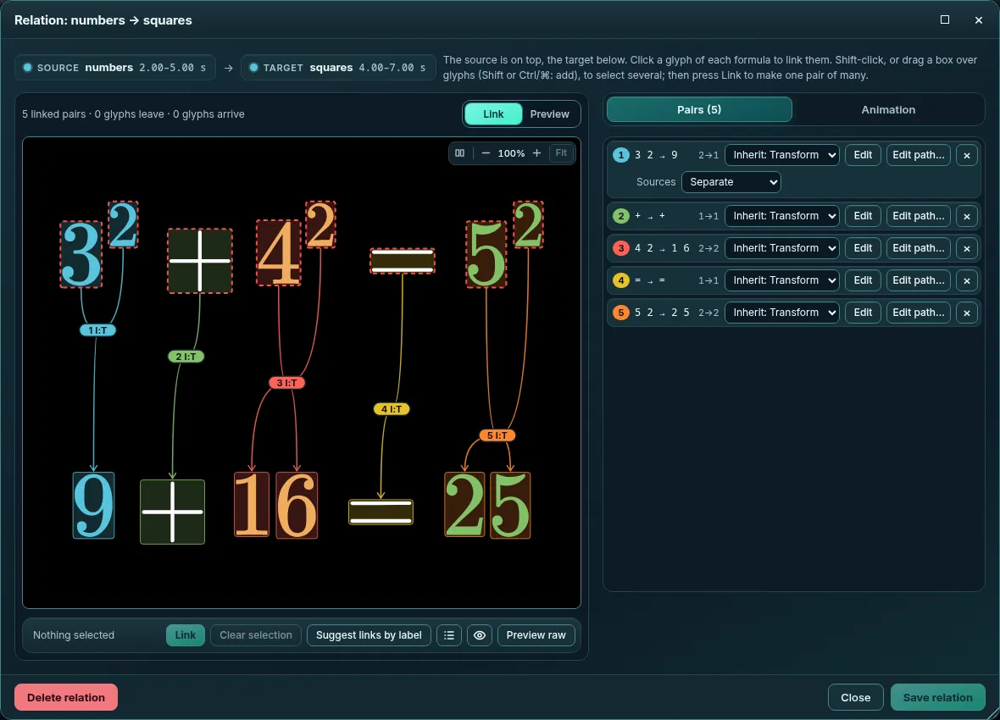
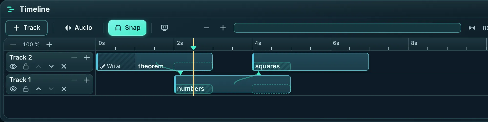
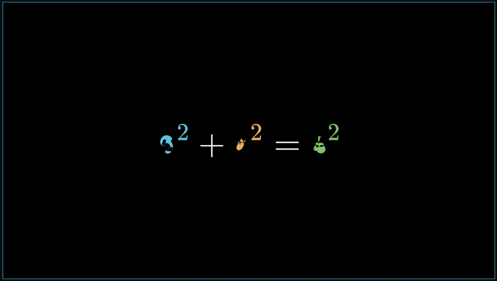
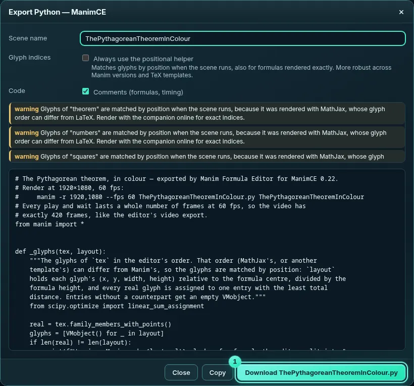

The Pythagorean theorem, in colour
Animate a² + b² = c² so that each term keeps its colour while it turns into a number and then into a square. On the way you write three formulas, colour their glyphs, put them on the timeline, link them and export the scene.
What you will make
Three lines of one derivation: the theorem, the 3-4-5 triangle that makes it concrete, and the sum of two squares that equals a third. The term a² is blue, b² gold and c² green, and each keeps its colour as it becomes 3² and then 9.
You will end with a project file, the Python that Manim runs, and a video like the one at the end of this page. Everything is in your browser. Manim itself is only needed for the very last step.
Before you start
- Open the editor and start an empty project with File ▸ New. Getting the app running tells how to open it.
- Give the project its name: click Untitled, the project's name in the menu bar, type
The Pythagorean theorem, in colourand press Enter. The Manim scene you export in step 9 is named after it. - If you have not used the editor, Your first animation is a shorter version of this tutorial, without colour.
- You can download the finished project and open it at any point, to compare with yours: choose File ▸ Open…, press Other file… and pick the file. Projects explains that dialog.
Step by step
1. Write the theorem
In the Creator press + New. The editor of a new formula opens.
- Click the Raw LaTeX field and type
a^2 + b^2 = c^2. - Press Apply (or Ctrl+Enter). The glyph view on the right draws the formula and counts eight glyphs.
- Type
theoremin the Name field and press Enter. The name becomes a variable in the Python and the label of the clip on the timeline. - Type
2in the first box of Size, the scale, and press Enter. The box at its right then reads96, Manim'sfont_size: twice its default of 48, which reads better in a video.

2. Colour its three terms
Each glyph has a number, its place in the formula: a is 0 and its exponent 1, the + is 2, b and its exponent are 3 and 4, and so on up to the exponent of c, 7. You colour glyphs by selecting them in the glyph view.
- Drag a box over the a and its exponent. The box selects every glyph it touches.
- Click the blue swatch under the drawing.
- Do the same for b and its exponent with the gold swatch, and for c and its exponent with the green one.
Press Close. Colouring glyphs and objects shows the other ways to select glyphs and to give them colours.
3. Write and colour the other two
Press + New twice more, and give each formula its LaTeX, its name, a size of 2 and its colours the same way:
| Name | LaTeX | Colours |
|---|---|---|
numbers | 3^2 + 4^2 = 5^2 | 3 and its exponent blue, 4 and its exponent gold, 5 and its exponent green |
squares | 9 + 16 = 25 | 9 blue, 16 gold, 25 green |

4. Put the formulas on the timeline
Drag each card of the Creator onto a track of the timeline. A track holds clips that do not overlap, so use both:
theoremat 0 s on the upper track,numbersat 2 s on the lower track,squaresat 4 s on the upper track again.
A dropped clip is three seconds long, and its start snaps to the ticks of the ruler. The clips overlap on purpose: a transformation starts when the second clip does, while the first is still on screen. The timeline at the end of step 7 shows how it should look.
5. Let the first formula write itself
Right-click the clip of theorem and choose Intro ▸ Write. The formula now draws itself during the first second, as Manim's Write does.

6. Link the glyphs of the first two formulas
A relation says which glyphs of one clip become which glyphs of the next. Select the clip of theorem. In the Animations panel, under Relations:
- Choose
numbersin Relate with, and press Create relation…. The relation editor opens: the source above, the target below. - Press Suggest links by label. The glyphs that have the same label, the exponents, the + and the =, are proposed as dashed links. Press Accept all.
- Click the a of the source, then the 3 of the target: a click on a glyph of one side followed by a click on the other links them at once. Do the same for b and 4, and for c and 5.
- Press Save relation.


7. Link the second pair
Select the clip of numbers, relate it with squares and open the relation editor again. This time several glyphs become one or two, so you select them first: Shift+click glyphs of a side to select more than one, then click a glyph of the other side, or press Link when both sides hold several.
In numbers | In squares | How |
|---|---|---|
| 3 and its exponent | 9 | Shift+click both, then click the 9 |
| + | + | click, click |
| 4 and its exponent | 1 and 6 | Shift+click both, Shift+click the 1 and the 6, press Link |
| = | = | click, click |
| 5 and its exponent | 2 and 5 | as for the 4 |
Press Save relation. The relation editor explains every control.


8. Play it
Press the Play button under the Preview, or Space. Each term keeps its colour as it turns into the next one.

theorem to numbers.9. Export it
Choose Export ▸ Python — ManimCE… and press Download ThePythagoreanTheoremInColour.py (1). The button names the file after the scene, and the scene is named after the project, as you set up in Before you start. The first lines of the file say how to render it at the project's size, 1920×1080 at 60 frames a second:
manim -r 1920,1080 --fps 60 ThePythagoreanTheoremInColour.py ThePythagoreanTheoremInColourThat takes a while. For a quick draft, take -r 1920,1080 --fps 60 out and put -ql in its place, a low-quality 854×480 at 15 frames a second, and add -p to play the video when it is done:
manim -pql ThePythagoreanTheoremInColour.py ThePythagoreanTheoremInColourAdding -ql to the first command would change nothing: Manim applies -r and --fps after the quality flag.

The warnings in the dialog say that, without the companion, the scene finds the glyphs of each formula by their position when it runs. The Python page explains why, and the generated file works as it is. The generated Python goes through it, and Exporting covers ManimGL, video and audio.
The result
This is the Python the editor exports for the project you made, for each Manim:
And this is the scene as ManimCE renders it from the ManimCE file:
Ideas to go further
- Make the third line stay longer, and add a block that makes 25 indicate itself.
- Swap the colours for the roles of a palette and apply it.
- Change a pair of the second relation to the copy style, so that the source stays, and watch what a relation does.